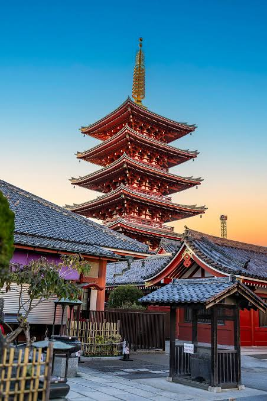
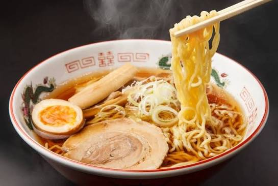

Where Would I Go?
For my dream vacation, I would visit Tokyo, Japan. I chose Tokyo because it has a mix of modern buildings, interesting places, and Japanese culture. I would love to see the bright city lights and visit famous places like Shibuya Crossing and Senso-ji Temple. Tokyo looks like a really fun place to explore, especially for someone visiting Japan for the first time.

TripAdvisor. (n.d.). Tokyo, Japan [Photograph]. Original photo
What Would I Do?
There are a lot of things I would want to do in Tokyo. I would visit Tokyo Skytree to see the city from above. I would also explore Akihabara because I enjoy video games, anime, and technology. Another thing I would do is walk around Shibuya, check out different stores, and take pictures. I feel like there would always be something interesting to do while visiting Tokyo.

Japanese temple [Photograph]. (n.d.). Outlook Traveller. Original photo
What Would I Eat?
One thing I would definitely look forward to is trying different Japanese foods. I would want to eat ramen, sushi, and tempura. I would also try takoyaki because it looks interesting and I have never had it before. I think trying local food would make the vacation even better.

Japanese ramen [Photograph]. (n.d.). Substack. Original photo
My Tokyo Vacation Checklist
These are some of the things I would want to experience during my trip.
- Visit Tokyo Skytree
- Explore Akihabara
- Walk through Shibuya Crossing
- Visit Senso-ji Temple
- Try authentic Japanese food